애니 기록 (전체 228개)
10점 (8개)
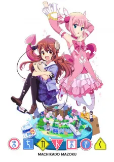
길모퉁이 마족 1, 2기 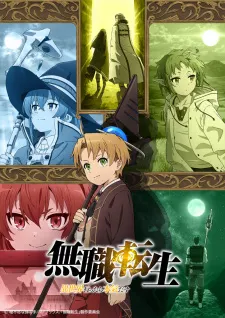
무직전생 1기 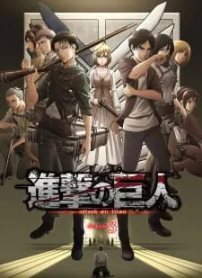
진격의 거인 3기 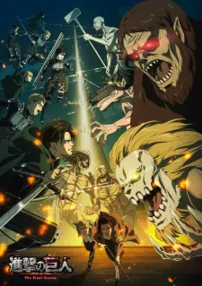
진격의 거인 4기 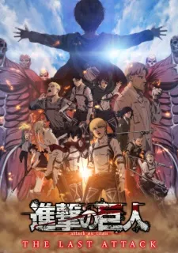
진격의 거인 5기 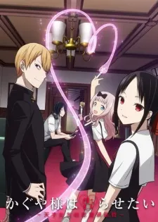
카구야 님은 고백받고 싶어 1, 2, 3기 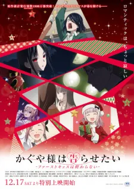
카구야 님은 고백받고 싶어 극장판 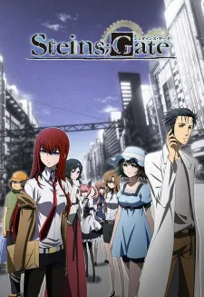
Steins; Gate
9.5점 (6개)
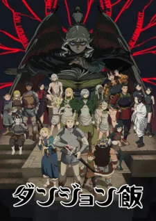
던전밥 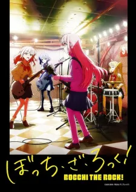
봇치 더 락! 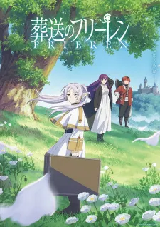
장송의 프리렌 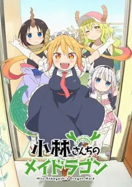
코바야시네 메이드래곤 1, 2기 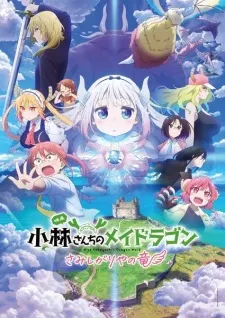
코바야시네 메이드래곤 극장판 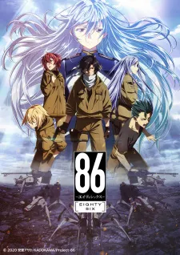
86 -에이티식스-
9점 (21개)
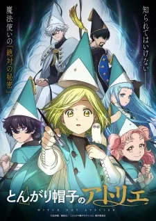
고깔모자의 아틀리에 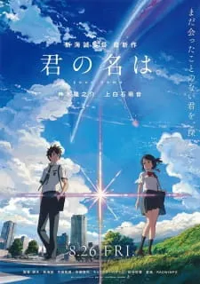
너의 이름은 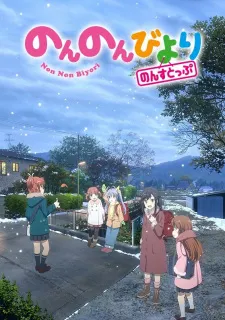
논논비요리 3기 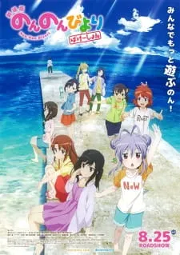
논논비요리 극장판 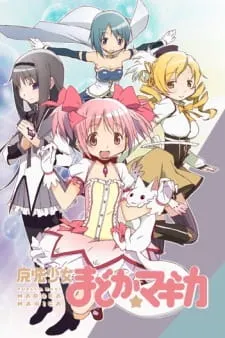
마법소녀 마도카 마기카 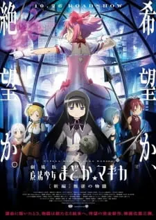
마법소녀 마도카 마기카 극장판 반역의 이야기 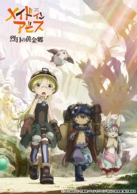
메이드 인 어비스 2기 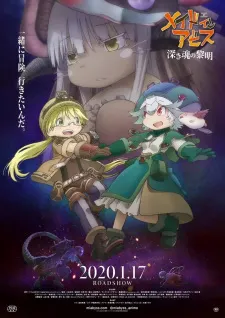
메이드 인 어비스 극장판 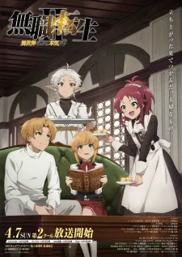
무직전생 2기 2쿨 사쿠라장의 애완그녀 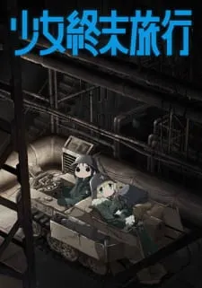
소녀 종말 여행 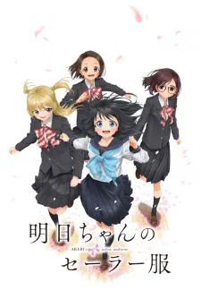
아케비의 세일러복 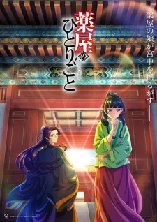
약사의 혼잣말 1기 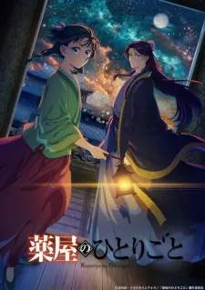
약사의 혼잣말 2기 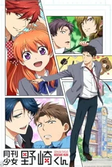
월간순정 노자키군 이윽고 네가 된다 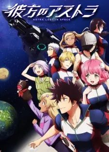
저 너머의 아스트라 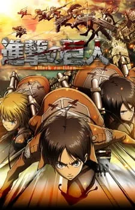
진격의 거인 1기 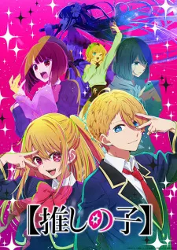
최애의 아이 1기 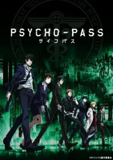
PSYCHO-PASS 1, 2기 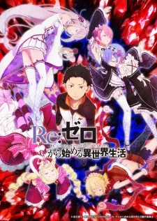
Re:제로부터 시작하는 이세계 생활 1기
8점 (33개)
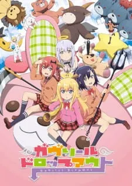
가브릴 드롭아웃 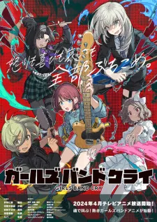
걸즈 밴드 크라이 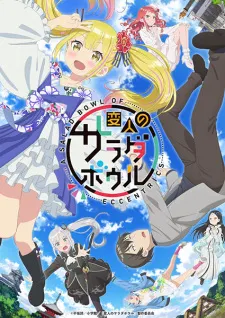
괴짜의 샐러드 볼 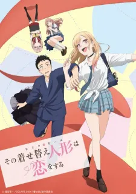
그 비스크돌은 사랑을 한다 1기 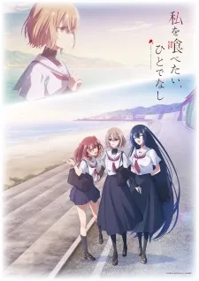
나를 먹고 싶은, 괴물 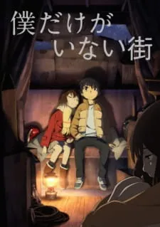
나만이 없는 거리 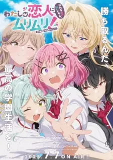
내가 연인이 될 수 있을 리 없잖아, 무리무리! (※무리가 아니었다?!) 1기 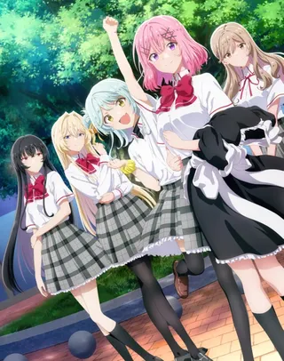
내가 연인이 될 수 있을 리 없잖아, 무리무리! (※무리가 아니었다?!) 극장판 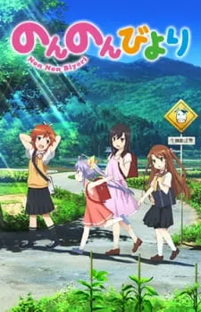
논논비요리 1, 2기 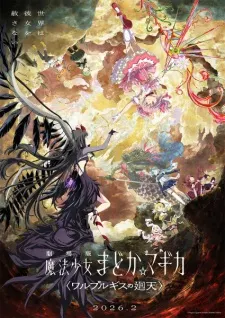
마법소녀 마도카 마기카 극장판 발푸르기스의 회천 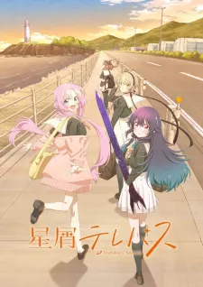
별무리 텔레패스 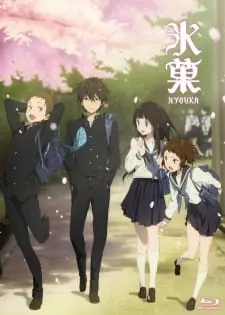
빙과 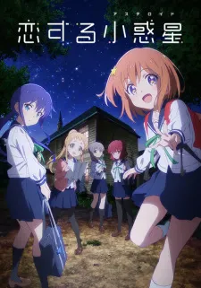
사랑하는 소행성 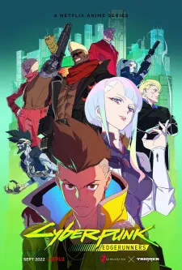
사이버펑크: 엣지러너 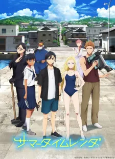
서머타임 렌더 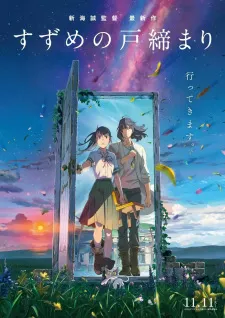
스즈메의 문단속 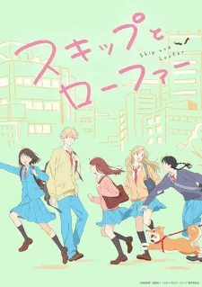
스킵과 로퍼 시로바코 오드 택시 오빠는 끝! 우주보다 먼 곳 유루캠 1, 2기 이 멋진 세계에 축복을! 1, 2기 이 멋진 세계에 축복을! 극장판 종말에 뭐하세요? 바쁘세요? 구해주실 수 있나요? 천국대마경 청춘돼지는 바니걸 선배의 꿈을 꾸지 않는다 체인소 맨: 레제 편 코미 양은 커뮤증입니다 1, 2기 흘러가는 나날, 밥은 맛있어 히나마츠리 BanG Dream! It's MyGO!!!!! Vivy ~Fluorite Eye's Song~
7점 (29개)
거미입니다만, 문제라도? 공주님 "고문"의 시간입니다 1, 2기 귀멸의 칼날 1기 기숙학교의 줄리엣 나에게 천사가 내려왔다 나에게 천사가 내려왔다 극장판 너는 방과후 인섬니아 데미는 이야기하고 싶어 도로헤도로 루리의 보석 바라카몬 보석의 나라 쇼와 겐로쿠 라쿠고 심중 1, 2기 쇼와 겐로쿠 라쿠고 심중 1기 (1화) 스파이 패밀리 1기 신세기 에반게리온 쓰레기의 본망 영상연에는 손 대지마! 이세계 삼촌 재와 환상의 그림갈 책벌레의 하극상 1기 체인소 맨 케모노 프렌즈 1기 케이온! 1기 토라도라! 플립 플래퍼즈 학교생활! 4월은 너의 거짓말 Steins; Gate 0
6점 (37개)
건어물 여동생 우마루 짱 1기 괴롭히지 말아요, 나가토로 양 1, 2기 기동전사 건담: 수성의 마녀 1기 내 마음의 위험한 녀석 1기 니세코이 1기 데아이몬: 화과자 이야기 리코리스 리코일 마녀의 여행 마법소녀를 동경해서 마왕성에서 잘 자요 명탐정 코난: 척안의 잔상 (극장판 28기) 무능한 나나 무직전생 2기 1쿨 바이올렛 에버가든 방과 후 제방일지 배드 걸 비스타즈 1기 사신 짱 드롭킥 1, 2기 슬로우 루프 알바뛰는 마왕님! 1기 엔드 오브 에반게리온 울려라! 유포니엄 2기 총집편 유녀전기 쟈히 님은 기죽지 않아! 전생했더니 슬라임이었던 건에 대하여 1기 즐겁게 놀아보세 지옥락 1기 철야의 노래 1기 철야의 노래 2기 카미이나 보탄, 취한 모습은 백합의 꽃 케무리쿠사 해피 슈가 라이프 히토리 봇치의 ○○생활 Do It Yourself!! -두 잇 유어셀프- Re:제로부터 시작하는 이세계 생활 2기 Re:제로부터 시작하는 이세계 생활 3기 Re:제로부터 시작하는 이세계 생활 3기 1화
5점 (27개)
갑자기 여행 -That's Journey- 고블린 슬레이어 1기 다다미 한 장짜리 방 만끽 생활! 닥터 스톤 1기 도쿄 구울 1기 마사무네의 리벤지 1기 메이드 인 어비스 1기 바케모노가타리 보이는 여고생 불멸의 그대에게 1기 신 없는 세계의 신 활동 아다치와 시마무라 아쿠다마 드라이브 아키바 메이드 전쟁 아하렌 양은 알 수가 없어 여친, 빌리겠습니다 1기 오버로드 4기 오타쿠 엘프 유루유리 1기 이 용사가 ZZANG센 주제에 너무 신중하다 이세계 식당 1기 장난을 잘 치는 타카기 양 1기 좀비 랜드 사가 1기 주문은 토끼입니까? 1기 카케구루이 1, 2기 파티피플 공명 ID: INVADED
4점 (20개)
금빛 모자이크 1기 다다미 넉장 반 세계 일주 마사무네의 리벤지 2기 블렌드 S 아이돌 마스터 신데렐라 걸즈 U149 어쨌든 귀여워 1기 오버로드 1기 우자키 양은 놀고 싶어! 1기 울려라! 유포니엄 1기 총집편 이 멋진 세계에 폭염을! 이세계 콰르텟 1, 2기 전생했더니 검이었습니다 초 카구야 공주! 터무니없는 스킬로 이세계 방랑 밥 호리미야 Another BanG Dream! Ave Mujica NEW GAME! 1기 ReLIFE SSSS.GRIDMAN
3점 (19개)
고블린 슬레이어 극장판 기동전사 건담: 수성의 마녀 2기 기생수 네코모노가타리(흑) 늑대와 향신료 1기 다가시카시 1기 단간론파 1기 던전에서 만남을 추구하면 안되는 걸까? 1기 목소리의 형태 비스타즈 2기 여친, 빌리겠습니다 2기 이웃집 흡혈귀 씨 전생 왕녀와 천재 영애의 마법혁명 전생했더니 슬라임이었던 건에 대하여 2기 최애가 부도칸에 가 준다면 난 죽어도 좋아 쿠노이치 츠바키의 속마음 citrus ReLIFE 완결편 takt op. destiny
2점 (9개)
니세모노가타리 도쿄 구울 2기 샤를로트 아픈 건 싫으니까 방어력에 올인하려고 합니다 1기 엔드로~! 옆집 천사님 때문에 어느샌가 인간적으로 타락한 사연 저, 능력은 평균치로 해달라고 말했잖아요! 청춘돼지는 꿈꾸는 소녀의 꿈을 꾸지 않는다 퐁의 길
1점 (4개)
그날 본 꽃의 이름은 우리는 아직 모른다 시원찮은 그녀를 위한 육성방법 1기 외톨이 흡혈 공주의 고뇌 Sonny Boy
0점(드랍) (15개)
경계의 저편 귀엽기만 한 게 아닌 시키모리 양 노 게임 노 라이프 모브사이코 100 1기 문호 스트레이독스 1기 블루 아카이브 새 엄마가 데려온 딸이 전 여친이었다 섀도 하우스 소드 아트 온라인 1기 역시 내 청춘 러브코메디는 잘못됐다. 용왕이 하는 일 우마무스메 2기 일하는 세포 주술회전 1기 페이트 UBW